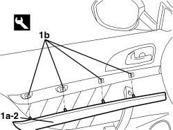

7005E16 LEFT OR RIGHT INNER DOOR PANEL SEAL - R.R.
- Path
- Procedures > 70 FITTINGS > 7005 PASSENGER COMPARTMENT FRONT SIDE DOORS > 7005E FRONT DOOR TRIM > 7005E16 LEFT OR RIGHT INNER DOOR PANEL SEAL - R.R.
- Kind
- repair procedure (removal / refitting; the operation number is the code)
- Applies to
- all engines; all production periods
- Interactive page
- https://sloeber94.github.io/elrnDB-aBrrSpdr/en/#/946002518
Applies to: all engines; all production periods
 Removing
Removing
 Refitting
Refitting1. Using the special tool, move the trim (1a) releasing the inner retainers (1b).
Tool | Description | Function | Validity |
|---|---|---|---|
1823014000 | Knife | Retainer removal |
2. Keep the trim.

Applies to: all engines; all production periods
Refitting
Removing- Check that the trim is not damaged.
- Place the trim in position and attach the inner retainers.